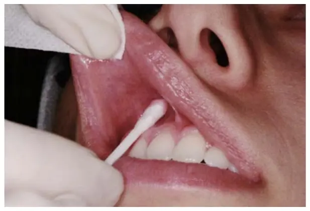

نسخه استخراجشده؛ ترجمه یا تأیید علمی انجام نشده است. وضعیت: captured
دستیار برای کودکی ۷ ساله، ژل بیحسی را با پنبهی بزرگ روی لثهی کل یک ربع و کام مالیده است. کودک از طعم تلخ و بیحسی ته حلق ناراحت است و گریه میکند. کجای کار اشتباه بود؟

بیحسی سطحی فقط برای این است که ورود سوزن حس نشود. فقط ۲ تا ۳ میلیمتر بیرونی مخاط را بیحس میکند و بافت عمقی تقریباً بیحس نمیشود. بیحسیکنندههای سطحی معمول از پوست سالم رد نمیشوند، ولی از مخاط و پوست خراشیده عبور میکنند.
اسپریهایی که مقدار سنجیده نمیدهند مؤثرتر نیستند و کنترل مقدار و محلشان سخت است؛ داخل دهان به کارشان نبر.
آرتیکائین، مپیواکائین و پریلوکائین در غلظت قابلقبول اثر سطحی ندارند؛ لیدوکائین هم تزریقی است و هم سطحی.
اشتباه رایج: ژلهای ترکیبی ساخت داروخانه با غلظت بالا، مثل لیدوکائین ۲۰٪ با تتراکائین، سقف دوز مشخصی ندارند و فاصلهی دوز مؤثر تا سمیشان کم است؛ مرگ هم گزارش شده. کوکائین هم بهخاطر خطر سوءمصرف توصیه نمیشود.